채널: 지식인사이드 | 길이: 24:12 | 날짜: 2026-06-22
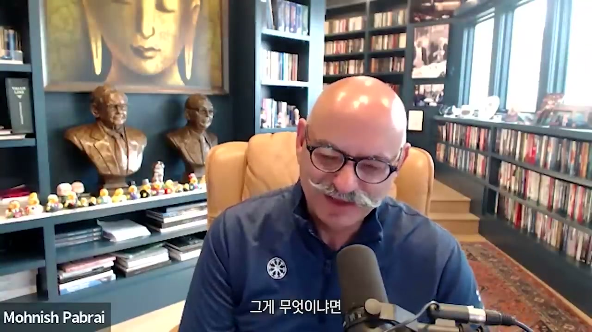
진행자는 파브라이를 워런 버핏과의 점심을 7억 원에 낙찰받은 가치투자자이자 현재 약 1조 원 규모의 자산을 운용하는 인물로 소개한다. 파브라이는 자신을 “약 14억 달러를 운용하는 머니 매니저”라고 설명하며, 대화는 그 유명한 점심이 실제로 값어치가 있었는지 묻는 질문에서 시작된다. 그는 점심을 단순한 만남이 아니라 버핏이라는 살아 있는 거장에게 접근할 수 있었던 드문 기회로 본다. 뉴턴이나 아인슈타인과 점심을 먹을 수 있다면 얼마를 낼 것인가라는 비유를 통해, 버핏을 역사상 가장 뛰어난 투자자 계열의 인물로 놓는다.
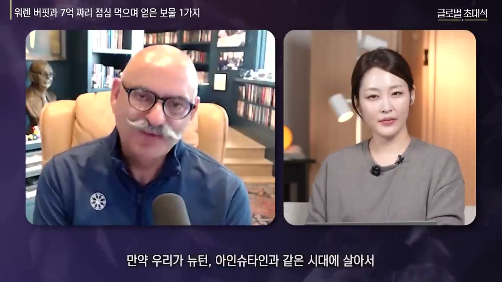
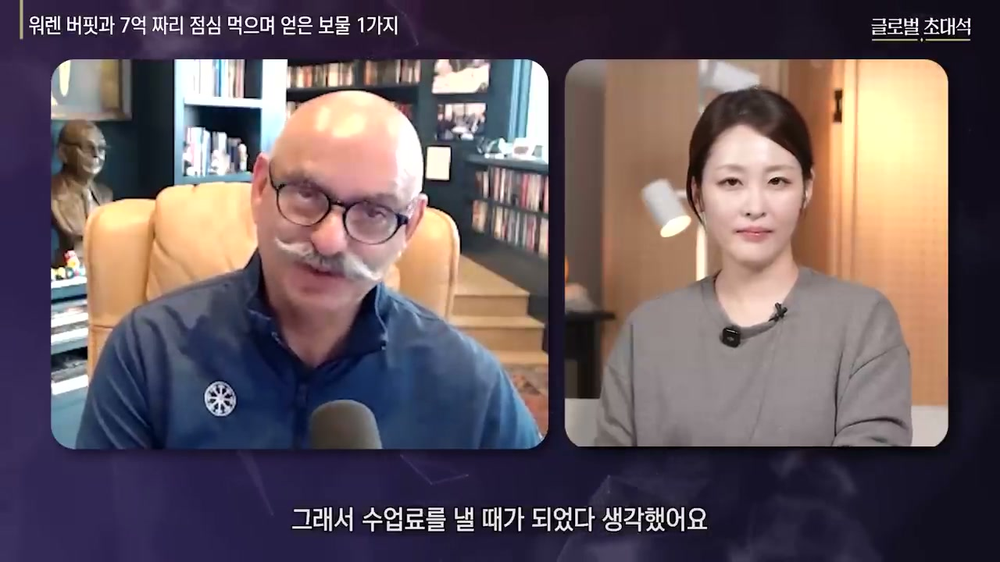
파브라이는 2007년 당시 이미 버핏의 지적 재산, 즉 투자 원칙을 자신의 커리어에 적용해 7,000만 달러 이상을 벌었다고 말한다. 그래서 스스로 “수업료 청구서가 왔다”고 느꼈고, 스승이 자신을 7,000만 달러 더 부유하게 만들었다면 적절한 수업료는 얼마인가를 계산했다. 그는 3%면 합리적이며 오히려 낮을 수도 있다고 생각했고, 그 금액은 약 200만 달러였다. 실제 경매는 65만 달러에서 끝났으므로 그의 예산 대비 3분의 1 이하였고, 그래서 “진짜 바겐”이었다.
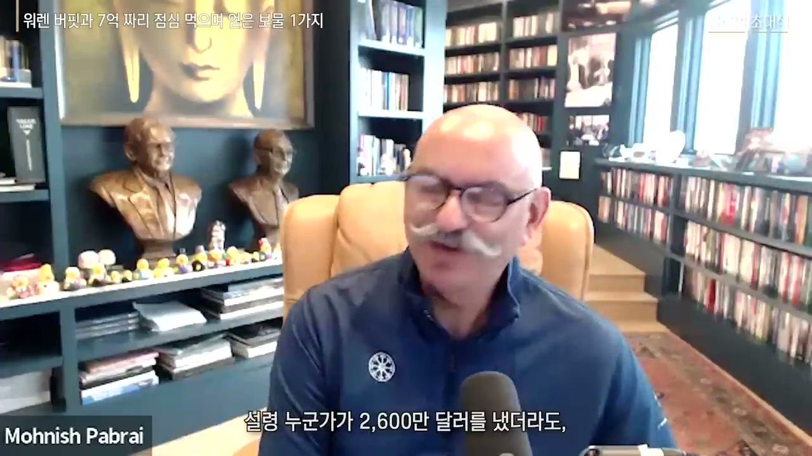
파브라이의 원래 목적은 버핏에게 감사 인사를 하는 것뿐이었다. 눈을 보고 감사하다고 말하는 것 외에 어떤 실익도 기대하지 않았다고 한다. 그러나 버핏은 전혀 다른 기대를 갖고 있었다. 점심을 산 사람이 2,600만 달러를 냈더라도 식사 후 “나는 큰 바겐을 얻었다”고 믿게 만드는 것이 그의 목표였고, 그래서 점심 전 참석자들의 이력과 약력을 모두 공부했다.
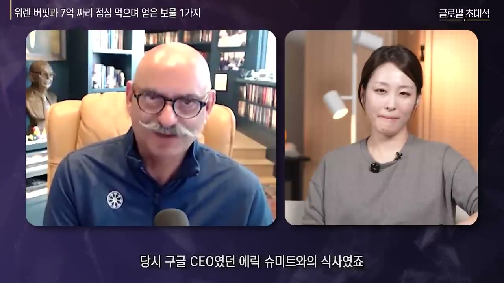
버핏은 점심이 오후 1시쯤 시작되자 자신은 오후 내내 일정이 없고, 참석자들이 지칠 때까지 있겠다고 말했다. 이 태도는 당시 구글 CEO였던 에릭 슈미트와의 자선 점심과 극명하게 대비된다. 슈미트와의 점심은 구글 캠퍼스 식당에서 열렸고, 그는 15분마다 시계를 봤으며, 예정된 1시간이 지나자 곧바로 떠났다. 파브라이는 슈미트 점심은 10점 만점에 2점, 어쩌면 1점이라고 평가하고, 인생을 바꾼 기억이 전혀 없다고 말한다.
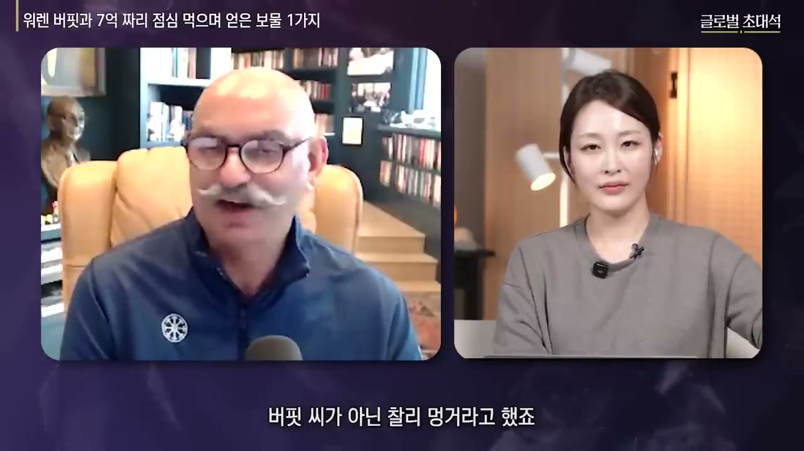
버핏 점심은 10점 만점에 15점이었다. 가장 큰 이유 중 하나는 아내가 버핏의 팬이지만 진정으로 좋아하는 사람은 찰리 멍거라고 말했을 때 벌어진 일이다. 버핏은 경쟁심을 보이며 멍거는 지루하고 함께 점심 먹을 가치가 없는 사람이고, 자신이 더 재미있는 사람이라고 농담했다. 그러면서 멍거와의 점심을 주선해 주겠다고 했다.
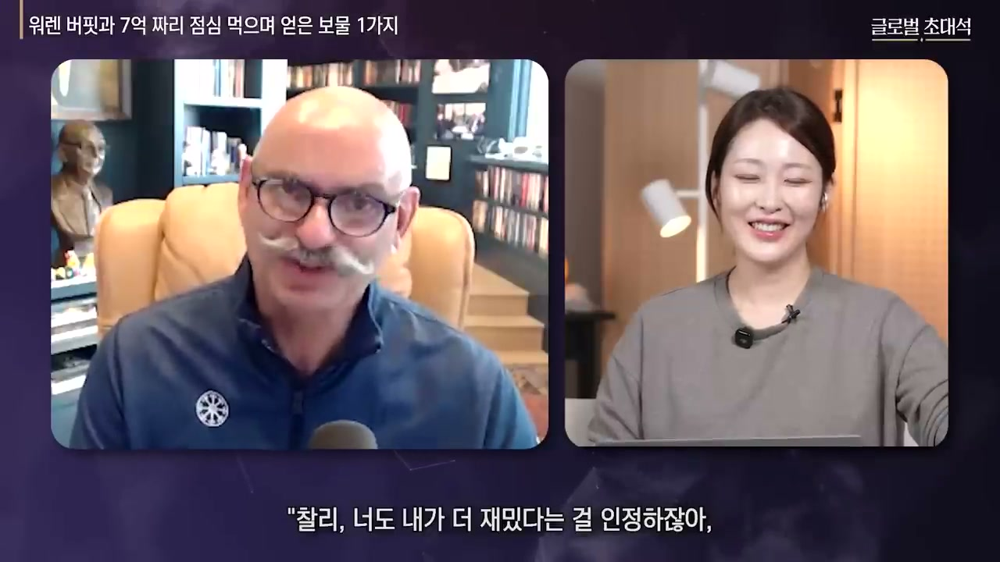
파브라이는 버핏이 농담한다고 생각했지만, 이틀 뒤 버핏의 비서가 멍거의 비서에게 이메일을 보내 실제로 만남을 잡았다. 이메일에는 캘리포니아에 사는 이 부부가 찰리를 자신보다 더 흥미롭다고 생각하는 것 같으니, 만나서 누가 더 재미있는지 알게 하라는 식의 장난기 있는 메시지가 담겼다. 결과적으로 파브라이는 버핏보다 멍거와의 점심을 더 즐겼고, 버핏의 계획은 “역효과”를 냈다고 표현한다. 더 중요한 것은 멍거와 우정이 생겼고 이후 3~4개월마다 가족 또는 아내와 함께 멍거의 집에서 저녁을 먹게 되었다는 점이다.
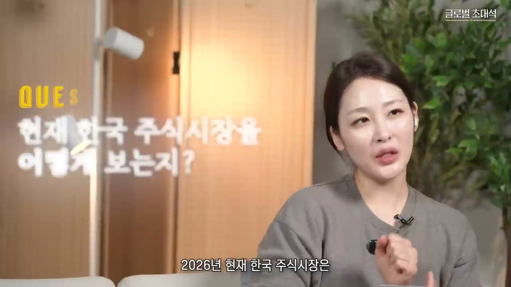
진행자는 과거 파브라이가 한국 시장을 매우 저평가된 시장, 기회가 많은 시장이라고 말한 적이 있다며 2026년 현재 한국 주식시장을 어떻게 보는지 묻는다. 파브라이는 현재 한국 시장이 SK하이닉스와 삼성 때문에 매우 한쪽으로 기울어져 있다고 답한다. 반도체 산업은 엄청난 순풍을 받고 있고, 한국은 SK하이닉스를 통해 골드러시에서 곡괭이를 파는 위치에 있다고 설명한다. 이 비유는 AI 수요 폭증 속에서 직접 금을 캐는 기업보다 필수 장비를 공급하는 기업이 안정적 수혜를 본다는 판단이다.
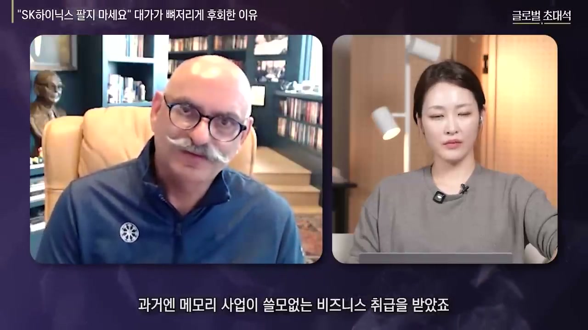
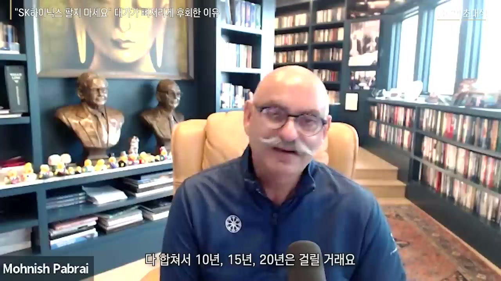
그는 삼성과 여러 번 만났고 SK하이닉스에 투자한 적도 있다고 말한다. 하지만 자신이 스스로의 원칙을 어기고 영원히 보유해야 할 기업들을 팔았다는 점을 매우 안타깝게 여긴다. 메모리 사업은 과거에는 20개 기업이 서로 가격을 깎고 용량 경쟁을 하며 아무도 돈을 벌지 못하는 “쓸모없는 비즈니스”처럼 취급받았다. 그러나 시간이 지나며 기업들이 망하거나 인수되어 삼성, SK하이닉스, 마이크론 3개 기업만 남았고, 특허·인력·공정·팹 건설·10~20년의 시간 장벽 때문에 네 번째 신규 플레이어 진입은 거의 불가능하다고 본다.
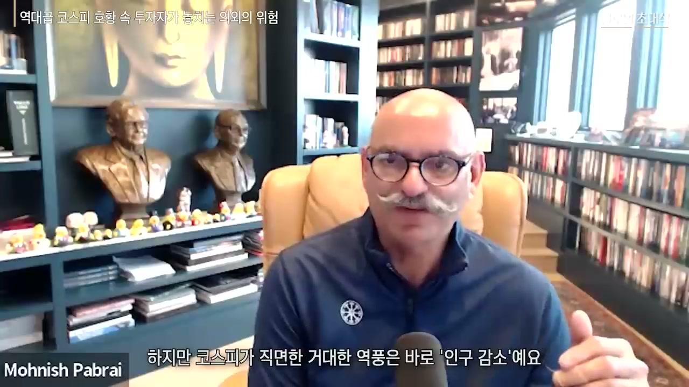
삼성과 SK하이닉스는 코스피 지수에서 큰 비중을 차지하므로 투자자에게는 멋진 상승장이었다. 이미 보유하고 있다면 팔지 말라고 하며, “파티는 이제 막 시작됐다”고 말한다. 그러나 코스피 전체가 계속 오를지에 대해서는 더 복합적으로 본다. 나머지 코스피는 여전히 어느 정도 저평가되어 있다고 보지만, 한국이 직면한 큰 역풍은 빠른 인구 감소라고 지적한다.
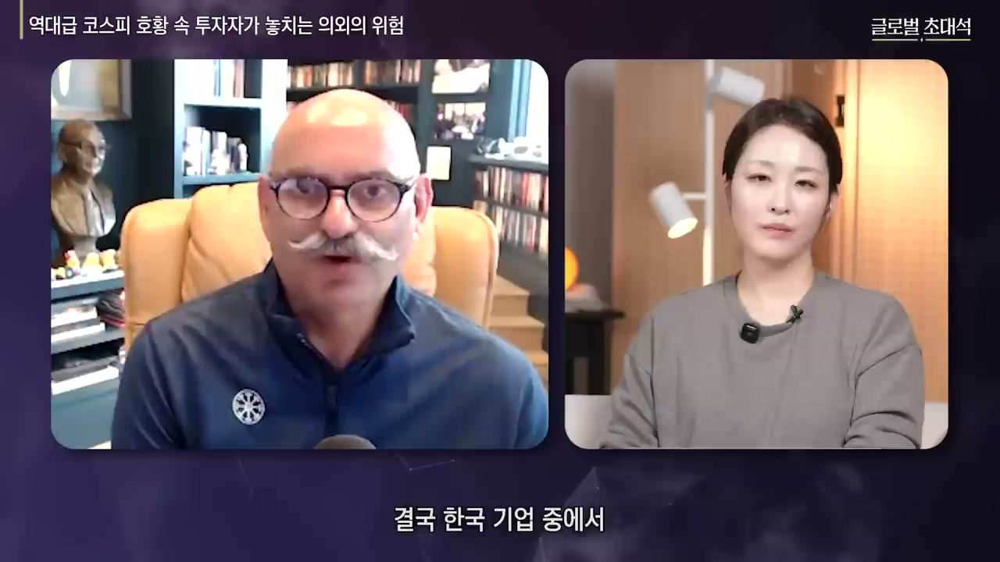
인구 감소는 장기적으로 국가 총생산에 부담을 주고 결국 주식시장에도 반영된다. 한국이나 일본처럼 인구가 줄어드는 나라는 괜찮은 GDP 성장을 유지하려면 수출 강국이어야 하는데, 한국은 실제로 수출 강국이다. 하지만 미국 같은 나라가 관세로 반응하면 부정적이고, 인구 감소 때문에 노동비용이 크게 오르는 문제도 생긴다. 수출 편향이 없는 한국 기업은 어려움을 겪고, 수출 기업도 현대차처럼 훌륭한 사업임에도 생산이 중국, 인도, 앨라배마 등으로 이동하는 압박을 받는다.
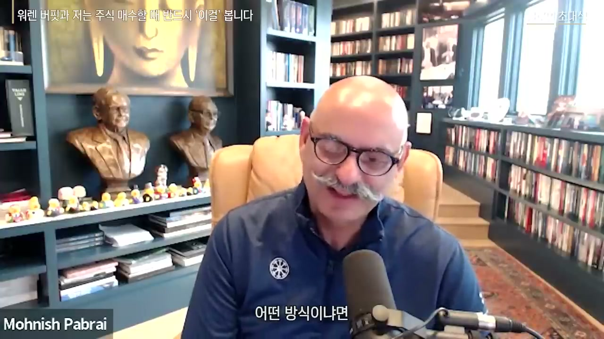
파브라이는 자신의 기업 분석 방식이 버핏과 멍거의 접근법을 따른다고 말한다. 주식을 종잇조각으로 보지 않고 기업의 일부로 보며, 어떤 주식을 살 때는 마치 회사 전체를 사는 것처럼 접근한다. 목표는 이상적으로 영원히 보유할 수 있는 투자를 찾는 것이다. 그는 무언가를 팔아야 한다면 이미 실수를 한 것이며, 더 나아가 대부분의 시장 참여자가 무언가를 팔 때도 실수를 한 것이라고 말한다.
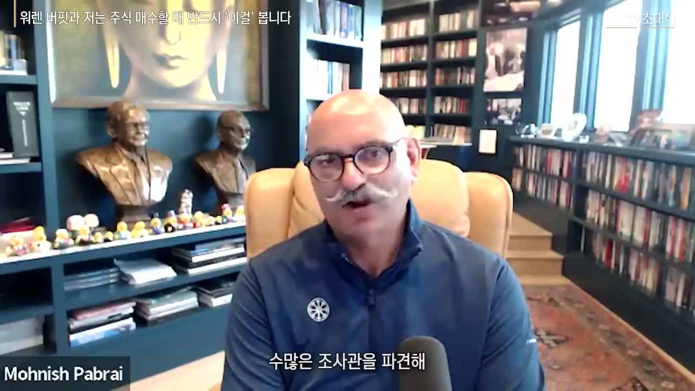
파브라이의 체크리스트는 항공산업에서 왔다. 미국 FAA는 항공 사고가 나면 많은 조사관을 보내 사고 원인을 찾고, 설계나 엔지니어링 문제라면 수정 여부를 실용적으로 판단한다. 아무 조치를 하지 않으면 향후 10년 또는 20년 동안 몇 번의 사고가 발생하고 몇 명이 사망할지 추정한다. FAA는 인간 생명의 가치를 약 500만 달러로 정의하고, 예컨대 500명이 죽을 위험이면 500명×500만 달러=25억 달러라는 계산을 한다.
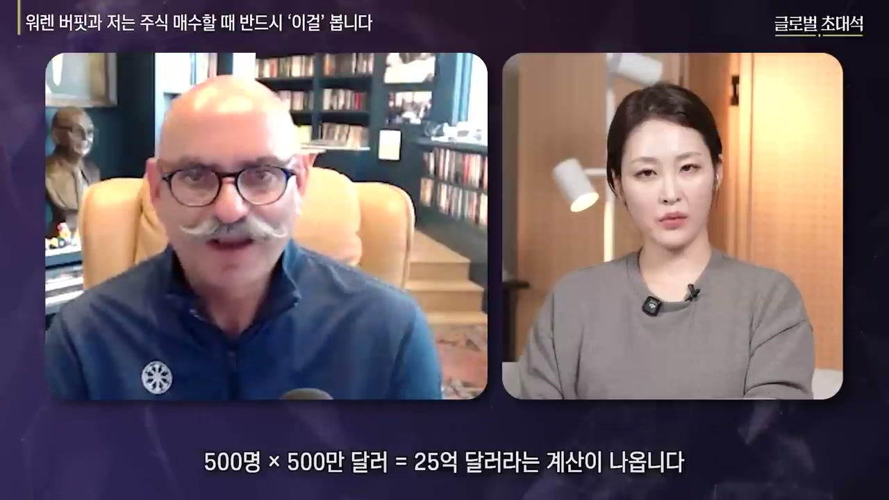
수정 비용은 이 25억 달러보다 낮아야 한다. 만약 수정 비용이 200억 달러라면 FAA는 그 조치를 하지 않는다. 이 실용주의 덕분에 항공은 매우 안전하면서도 비행 비용이 과도하게 비싸지 않다. 반대로 인간 생명의 가치를 무한대로 놓으면 LA에서 서울까지 비행하는 데 25만 달러가 들 수 있다고 설명한다.
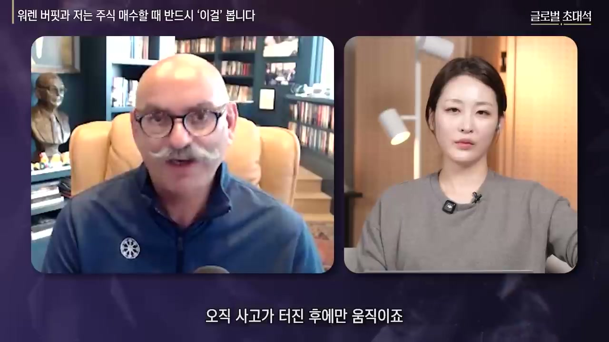
FAA는 실험실에 앉아 막연히 더 안전하게 만들자고 변경하지 않고, 실제 사고가 난 뒤에만 안전 개선을 한다. 파브라이는 이 방식을 투자에 적용했다. 투자에서 비행기 추락에 해당하는 것은 돈을 잃은 주식, 0이 된 주식, 손실로 판 주식이다. 손실로 판 주식은 생존자가 있는 추락이고, 0이 된 주식은 생존자 없는 추락이다.
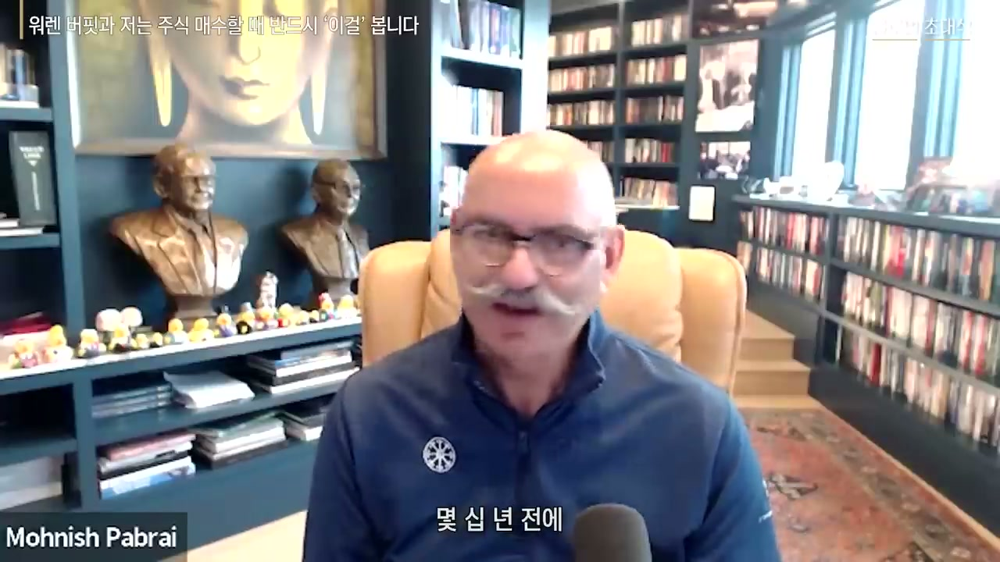
파브라이는 세계의 위대한 투자자들이 저지른 실수를 찾아보고, 돈을 잃기 전에 그 신호가 보였는지 확인한다고 한다. 버핏의 Dexter Shoes 투자는 대표 사례다. 버핏은 미국 신발회사 Dexter Shoes를 사기 위해 버크셔 주식 2%를 지급했다. 그러나 인수 직후 신발 사업은 중국, 베트남 등 저임금 해외 경쟁에 직면했고, 미국 제조 원가가 너무 높아 결국 Dexter Shoes는 망했다.
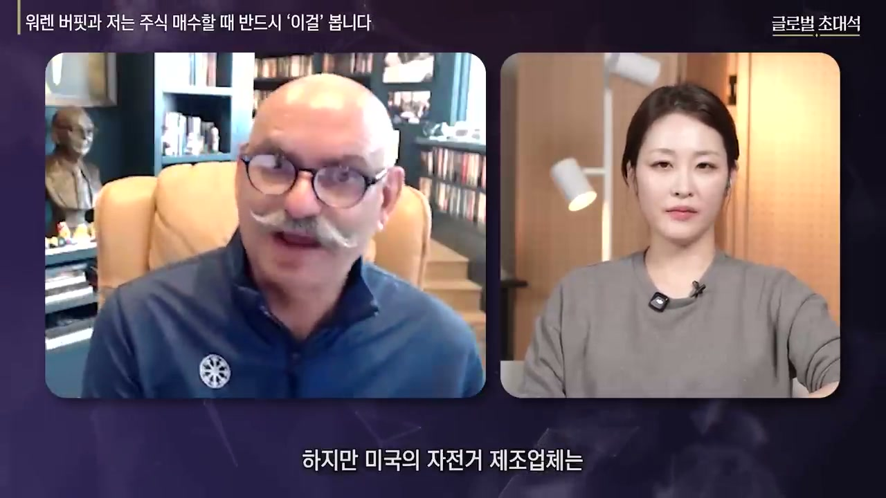
이 사례에서 파브라이가 얻은 질문은 “이 사업은 저렴한 해외 노동력이나 해외 경쟁에 의해 부정적 영향을 받을 수 있는가”이다. 미국 은행을 볼 때는 이 질문이 적용되지 않지만, 미국 자전거 제조업체를 본다면 적용된다. 이 질문은 “모니시, 거기는 가지 말라. Dexter에서 무슨 일이 있었는지 보라”고 알려주는 경고가 된다. 그의 체크리스트는 오직 이런 추락 사례들로부터 만들어졌다.
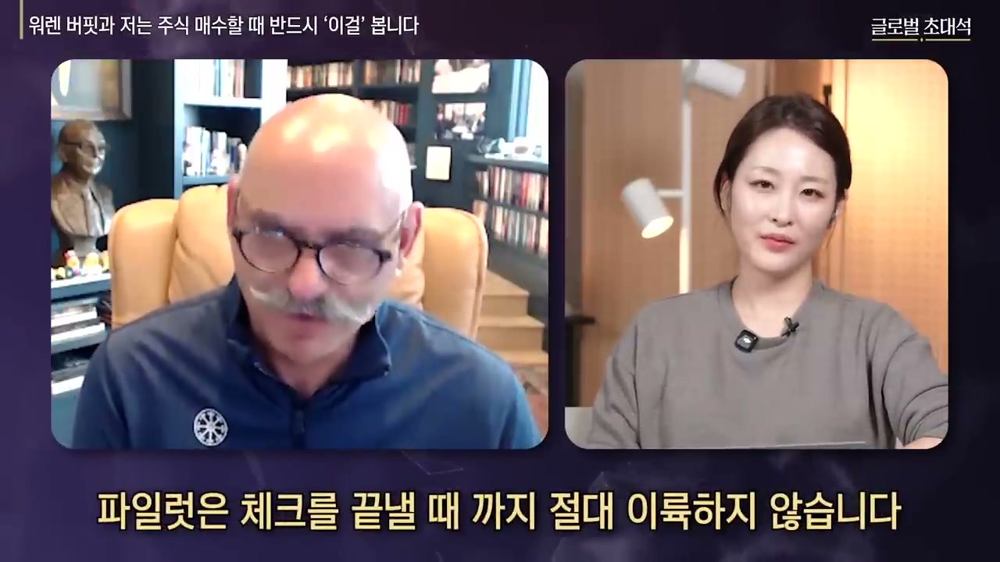
처음 체크리스트는 70~80개 문항이었지만, 16~17년이 지난 지금은 213개 문항으로 늘었다. 새 회사를 볼 때마다 모든 질문을 확인하며, 처음 돌릴 때 답하지 못하는 질문이 많으면 아직 충분히 조사하지 않았다는 뜻이다. 답을 찾아온 뒤 실패 항목들을 보고, 그 실패를 안고도 이륙할지 말지를 결정한다. 그는 조종사가 사전 점검 없이 이륙하지 않듯 투자자도 사전 체크리스트 없이 투자하면 안 된다고 말한다.
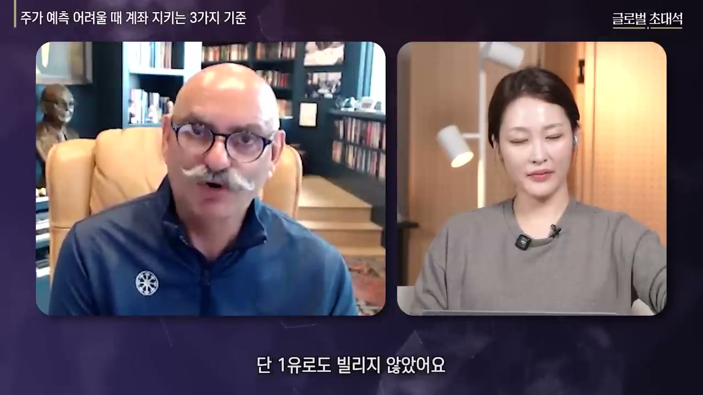
개인 투자자에게 가장 중요한 첫 번째 기준은 레버리지다. 투자자가 돈을 잃는 가장 큰 이유는 회사가 빚이 너무 많거나, 투자자 자신이 빚을 내 주식을 사기 때문이다. 파브라이는 투자할 때 부채가 없는 기업을 찾으라고 말한다. 이케아 창업자는 70년 넘게 이케아를 키우면서 단 1유로도 빌리지 않았고, 상장으로 외부 자금을 조달하지도 않았으며, 이전 매장의 유보이익으로 다음 매장을 열었다.
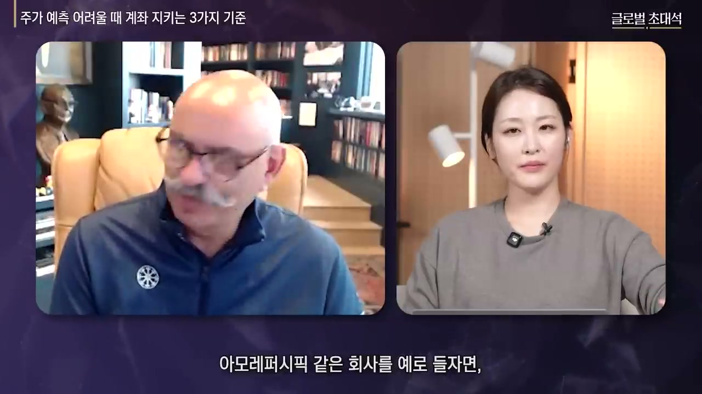
이케아 창업자가 그렇게 한 이유는 회사를 1,000년 지속시키고 싶었기 때문이다. 누구에게도 빚지지 않으면 아무도 우리의 게임을 멈추게 할 수 없다는 논리다. 최고의 기업은 사업 자체가 훌륭하기 때문에 부채 없이도 성장할 수 있다. 투자자 역시 빚을 내지 말고, 빚에 의존하는 기업에도 투자하지 말아야 한다.
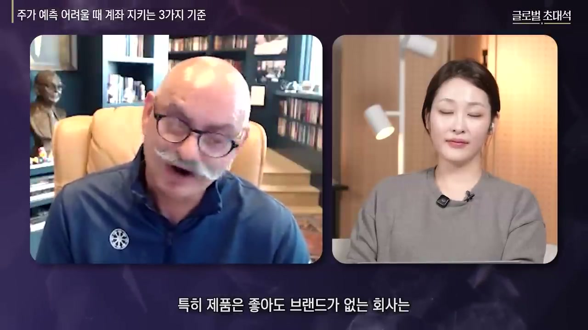
두 번째 기준은 경쟁우위와 해자를 제대로 이해하는 것이다. 파브라이는 아모레퍼시픽을 예로 들며, 한국 여성의 피부에 대한 세계적 선망과 충성 고객이 있음에도 이 사업은 어렵다고 말한다. 이유는 너무 많은 기업이 그 시장을 공격하고, 소비자들이 계속 더 나은 제품과 처치를 찾기 때문이다. 제품이 좋더라도 브랜드가 약하거나 경쟁 압력이 지속되면 오래 살아남기 어렵다.
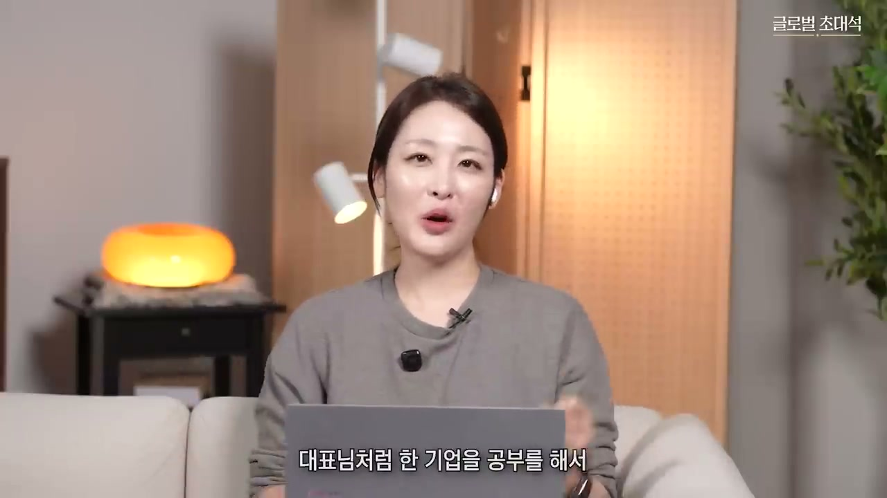
세 번째 기준은 경영진과 오너의 품질과 윤리다. 그들이 주주를 위하는지, 아니면 스스로 부자가 되는 데 더 관심이 있는지를 봐야 한다. 돈을 좋아하는 것은 괜찮지만 돈을 사랑해서는 안 되며, 그들이 돈을 사랑하는지 사업을 사랑하는지를 물어야 한다. 파브라이는 213개 질문을 모두 하지 못하더라도 레버리지, 해자, 사람의 질 세 가지만 집중하면 많은 문제를 피할 수 있다고 강조한다.
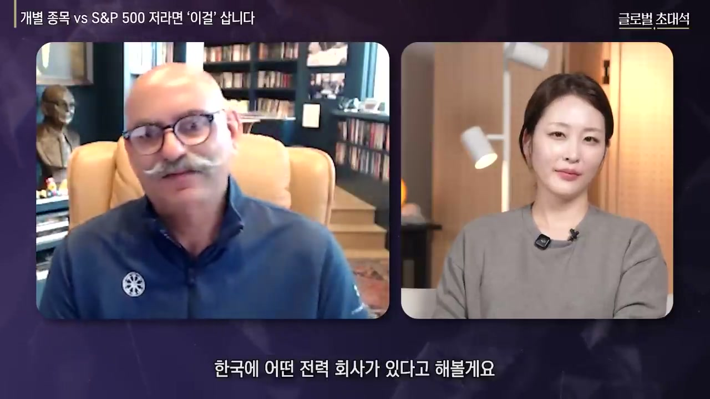
진행자는 개별 기업을 공부해 장기 투자하는 방식과 S&P 500 같은 인덱스를 모으는 방식 중 무엇을 추천하느냐고 묻는다. 파브라이는 99% 이상의 투자자는 그냥 인덱스를 사야 한다고 답한다. 누군가 SK하이닉스를 사고 싶다고 하면, 그는 10년 뒤와 20년 뒤 SK하이닉스가 창출할 현금흐름을 높은 확신으로 말할 수 있는지 묻겠다고 한다. 답할 수 없다면 그 주식은 사면 안 된다.
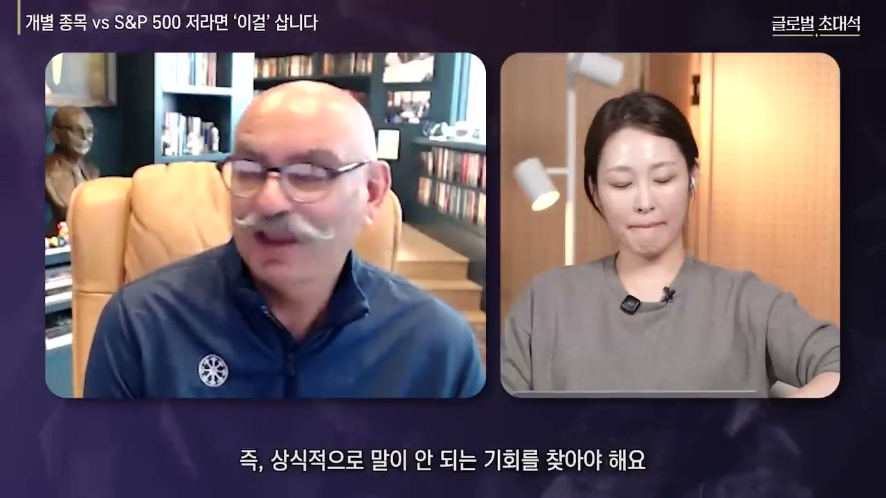
그가 선호하는 투자는 예측 가능성이 매우 높은 기회다. 예를 들어 한국의 전력회사는 고객이 매년 전력회사를 바꾸기 어렵고, 규제기관이 일정 수익률을 허용하므로 이해하기 쉬운 규제 사업이다. 만약 그 회사가 매년 1억 달러를 벌고 전체 회사를 3억 달러에 살 수 있으며, 이익 100%를 배당한다면 3년 만에 원금을 회수할 수 있다. 이런 식의 “노브레이너”에 가까운 무위험 투자가 그가 찾는 대상이다.
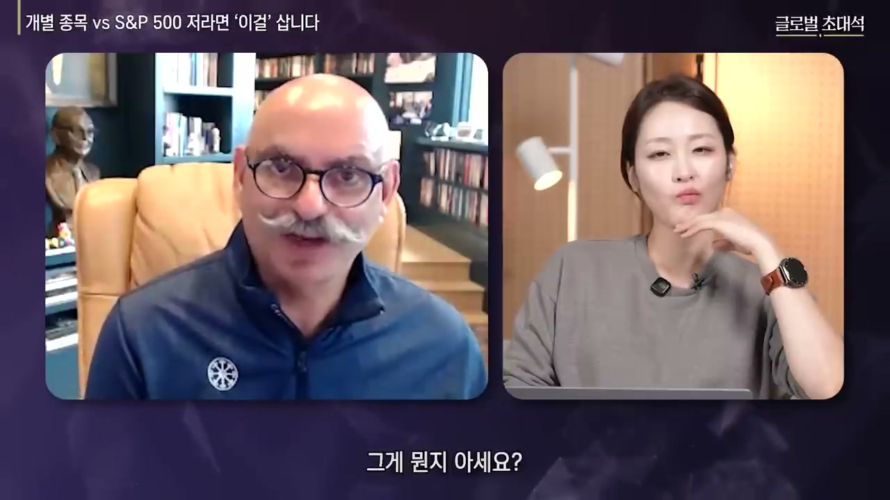
파브라이가 찾는 것은 대중적으로 사랑받는 테마가 아니라, 상식적으로 말이 안 되는 가격과 상황이다. 그는 미움받고 소외된 섹터에서 기회를 찾는다고 말한다. AI 섹터에 어떻게 적용하느냐는 질문에는 “이미 말했다, 미움받고 소외된 곳”이라고 답하며 AI처럼 깊이 사랑받는 곳에는 가지 않는다고 한다. 사랑받는 것은 사지 말라는 원칙이다.
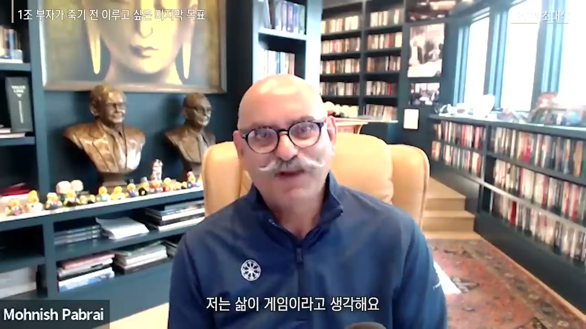
그는 과거 비트코인이 깊이 사랑받았고, AI가 등장하자 사람들이 비트코인을 팔고 AI를 샀다고 말한다. 비트코인은 10만 달러에서 7만 달러로 내려갔다고 언급한다. 이제 AI를 가진 사람들이 곧 AI를 팔고 다음 반짝이는 대상을 살 것이며, 그 대상은 SpaceX IPO일 수 있다고 본다. 그는 사람들이 그의 말을 듣고 콧수염을 보며 즐거워하겠지만, 결국 SpaceX를 사러 갈 것이라는 씁쓸한 농담으로 군중심리를 지적한다.
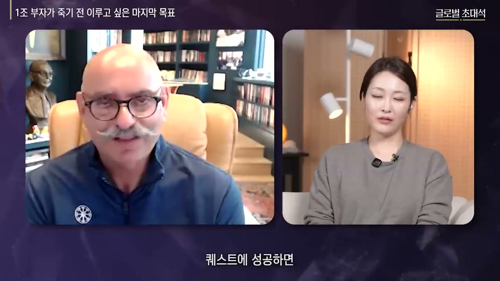
마지막 질문은 파브라이가 계속 투자하게 만드는 원동력이다. 그는 일정 수준을 넘으면 돈은 별 쓸모가 없고, 자신은 게임을 하고 있다고 말한다. 게임을 하려면 언제 죽을지 알아야 하는데, AI 시대의 “구글 신”에게 물어보니 자신은 2054년 6월 11일 죽는다는 답을 받았다고 농담한다. 그래서 죽기 하루 전인 2054년 6월 10일에는 1만 달러만 남기고 싶다고 한다.
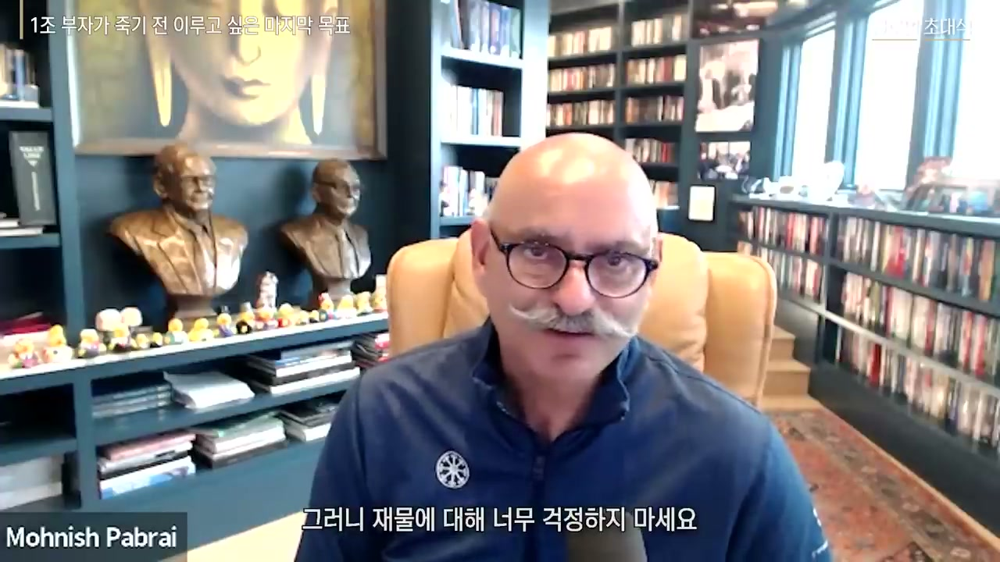
그에게는 두 개의 엔진이 있다. 하나는 돈을 복리로 불리는 엔진이고, 다른 하나는 Dakshina Foundation을 통해 돈을 나누는 엔진이다. 이 재단은 인도의 가난한 아이들이 좋은 교육을 받을 수 있도록 돕고, 그는 이 활동도 높은 수익을 낸다고 표현한다. 시간이 갈수록 기부 속도는 더 빨라져야 하며, 죽기 전 모든 것이 잘 나가고 1만 달러만 남으면 아름다운 게임이었다고 본다.
그는 한국 음식에 강한 애정을 보이며 순두부와 불고기를 좋아한다고 말한다. 순두부에 계란 몇 개만 넣어주면 충분하다고 하는 대목은 대화의 무게를 가볍게 풀어준다. 마지막으로 부자가 되고 싶은 사람에게 줄 한마디를 묻자, 그는 “부를 잃으면 아무것도 잃은 것이 아니고, 건강을 잃으면 무언가를 잃은 것이며, 인격을 잃으면 모든 것을 잃은 것”이라는 말을 남긴다. 그러므로 재물은 너무 걱정하지 말고, 건강은 조금 걱정하며, 인격은 전부를 걸고 걱정하라고 정리한다.
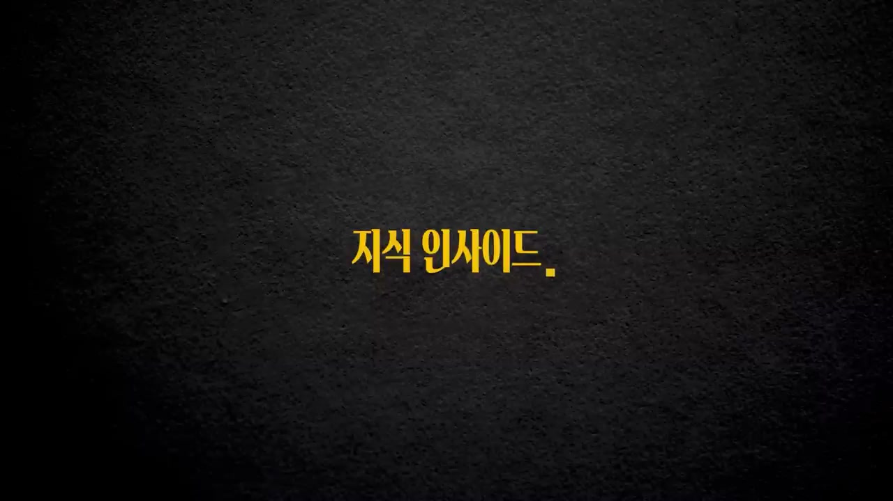
마지막 24:13 이후 자막은 자동 인식 오류로 보이는 무의미한 잔여 문장들이 이어진다. 내용상으로는 앞선 인격과 건강, 부에 대한 문장이 사실상 영상의 결론이다. 엔딩은 채널 마무리와 후속 콘텐츠 예고로 닫힌다. 실질적 메시지는 투자에서도 인생에서도 빚을 피하고, 오래 지속되는 질을 보고, 돈보다 인격을 우선하라는 데 모인다.
“버핏과의 점심은 내 관점에서 역대 최고의 거래였고, 진짜 바겐이었다.”
“2007년까지 나는 워런 버핏의 원칙을 적용해 7,000만 달러 이상을 벌었다. 그래서 수업료를 낼 때가 되었다고 생각했다.”
“누가 2,600만 달러를 냈더라도, 버핏의 초점은 그 사람이 점심 후 큰 바겐을 얻었다고 믿게 만드는 것이었다.”
“에릭 슈미트와의 점심은 10점 만점에 1~2점, 버핏과의 점심은 10점 만점에 15점이었다.”
“삼성과 SK하이닉스 메모리 사업은 매우 보호된 사업이다. 네 번째 신규 플레이어가 들어오는 것은 거의 불가능하다.”
“이미 보유하고 있다면 팔지 말라. 파티는 이제 막 시작됐다.”
“우리는 주식을 종잇조각으로 보지 않고 기업의 일부로 본다. 팔아야 한다면 실수한 것이다.”
“조종사는 체크리스트를 끝내기 전에는 절대 이륙하지 않는다. 투자자도 마찬가지다.”
“투자자가 돈을 잃는 가장 큰 이유는 레버리지다.”
“돈을 좋아하는 것은 괜찮지만 돈을 사랑해서는 안 된다. 그들이 돈을 사랑하는지 사업을 사랑하는지 물어야 한다.”
“99% 이상의 투자자는 그냥 인덱스를 사야 한다.”
“사랑받는 것은 사지 말라. 우리는 미움받고 소외된 곳에서 상식적으로 말이 안 되는 기회를 찾는다.”
“부를 잃으면 아무것도 잃은 것이 아니고, 건강을 잃으면 무언가를 잃은 것이며, 인격을 잃으면 모든 것을 잃은 것이다.”
이 영상의 핵심은 “좋은 투자는 싸게 사는 기술이 아니라, 오래 버틸 수 있는 질을 알아보는 기술”이라는 점이다. 파브라이는 버핏에게서 배운 것을 단순한 가치평가 공식이 아니라 태도, 시간 감각, 체크리스트, 인격의 문제로 확장한다. 한국 투자자에게는 삼성·SK하이닉스의 메모리 과점과 AI 순풍을 긍정적으로 보되, 인구 감소·노동비 상승·관세·생산기지 이전 같은 구조적 역풍을 동시에 보라고 말한다. 개인 투자자에게는 빚을 피하고, 해자를 검증하고, 경영진의 윤리를 보며, 그것을 할 자신이 없다면 인덱스를 사는 편이 낫다는 실용적 결론을 제시한다. 마지막으로 돈은 목표가 아니라 게임의 점수판일 뿐이며, 복리로 불린 자본을 사회에 돌려주는 일과 인격을 지키는 일이 투자보다 더 큰 삶의 기준이라고 정리한다.
댓글
GitHub 이슈 기반 댓글 시스템입니다.